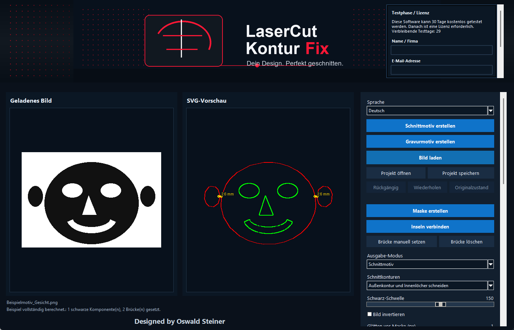

Intelligente Konturhierarchie
Außenkonturen, Innenlöcher und verschachtelte Formen werden zuverlässig unterschieden und in sinnvoller Reihenfolge ausgegeben.
LaserCut KonturFix verwandelt Bilder in saubere, intelligente und geprüfte SVG- oder DXF-Dateien – bereit für deinen Lasercutter.
Von der automatischen Konturerkennung bis zur finalen Exportprüfung arbeitet jeder Schritt nahtlos mit dem nächsten zusammen.
Außenkonturen, Innenlöcher und verschachtelte Formen werden zuverlässig unterschieden und in sinnvoller Reihenfolge ausgegeben.
Automatische, kollisionsbewusste Brücken mit situationsabhängiger Breite – besonders hilfreich bei Gesichtern und Stencils.
Zwei klare Workflows erzeugen reine Schnittmotive oder Gravuren mit einer präzisen schneidbaren Außenkontur.
Die Software erkennt problematische Bereiche vor dem Export und erklärt verständlich, wie sie automatisch oder manuell behoben werden können.
Brücken manuell setzen und löschen, Änderungen rückgängig machen, Projekte speichern und später exakt weiterbearbeiten.
Automatische Glättung, drei Qualitätsstufen und farbcodierte Schnittreihenfolge für einen verlässlichen SVG- und DXF-Workflow.

Bild oder Motiv laden
Schnitt oder Gravur wählen
Kontur automatisch optimieren
Vorschau und Prüfung kontrollieren
SVG, DXF oder PNG exportieren
Die passende Komplett-Demo öffnet sich je nach Sprache auf Deutsch oder Englisch.
Mit Praxisbeispielen zu Schnittmotiv, Gravurmotiv, Brücken, Vorschau, Export und Lizenzierung.
Jetzt für Windows herunterladen und 30 Tage lang unverbindlich testen. Die spätere Aktivierung funktioniert vollständig offline.